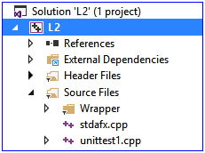
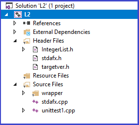
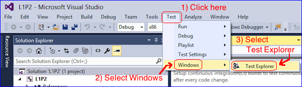
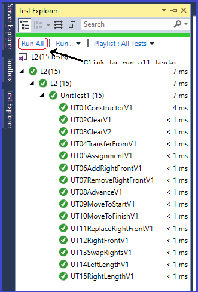

Setup Part 1)Create a VS2017 unit test project called: L2
When you are finished with the 3 steps above your L2 unit test project should look like the screen shot to the right |
 |
Setup Part 2)Create IntegerList.h
|
|
Setup Part 3)In Visual Studio, add the IntegerList.h file to the Header Files folder
When you are finished with the 3 steps above your L2 unit test project should look like the screen shot to the right |
 |
Setup Part 4)Edit the file IntegerList.h
|
|
Setup Part 5)Edit the top of the file unittest1.cpp by adding the following 2 #include lines
When you are finished, the file should look like unittest1.cpp file should look like the following: |
#include "stdafx.h"
#include "CppUnitTest.h"
#include "Wrapper.h"
#include "IntegerList.h"
using namespace Microsoft::VisualStudio::CppUnitTestFramework;
namespace L2
{
TEST_CLASS(UnitTest1)
{
public:
TEST_METHOD(TestMethod1)
{
// TODO: Your test code here
}
};
} |
Build your project
UT01ConstructorV1: List1(); outgoing: s1 = (<>,<>) UT02ClearV1: s1.clear(); incoming: s1 = (<>,<>) outgoing: s1 = (<>,<>) UT03ClearV2: s1.clear(); incoming: s1 = (<>,<33>) outgoing: s1 = (<>,<>) UT04TransferFromV1: s1.transferFrom(s2); incoming: s1 = (<>,<>) and s2 = (<>,<44>) outgoing: s1 = (<>,<44>) and s2 = (<>,<>) UT05AssignmentV1: s1 = s2; incoming: s1 = <> and s2 = (<>,<17>) outgoing: s1 = (<>,<17>) and s2 = (<>,<17>) UT06AddRightFrontV1: s1.addRightFront(k); incoming: s1 = (<>,<21>) and k = 35 outgoing: s1 = (<>,<35,21>) and k = 0 UT07RemoveRightFrontV1: s1.removeRightFront(k); incoming: s1 = (<>,<11,33,55,77,99>) and k = 0 outgoing: s1 = (<>,<11,33,55,77,99>) and k = 11 UT08AdvanceV1: s1.advance(); incoming: s1 = (<>,<11,33,55,77,99>) outgoing: s1 = (<11,33>,<55,77,99>) UT09MoveToStartV1: s1.moveToStart(); incoming: s1 = (<11,33>,<55,77,99>) outgoing: s1 = (<>,<11,33,55,77,99>) UT10MoveToFinishV1: s1.moveToFinish(); incoming: s1 = (<>,<11,33,55,77,99>) outgoing: s1 = (<11,33,55,77,99>,<>) UT11ReplaceRightFrontV1: s1.replaceRightFront(k); incoming: s1 = (<11,33>,<55,77,99>) and k = 200 outgoing: s1 = (<11,33>,<200,77,99>) and k = 55 UT12RightFrontV1: s1.rightFront(); incoming: s1 = (<3,7>,<11>) outgoing: s1 = (<3,7>,<11>) UT13SwapRightsV1: s1.swapRights(s2); incoming: s1 = (<11,33>,<>) and s2 = (<>,<55,77,99>) outgoing: s1 = (<11,33>,<55,77,99>) and s2 = (<>,<>) UT14LeftLengthV1: s1.leftLength(); incoming: s1 = (<11,33>,<>) outgoing: s1 = (<11,33>,<>) UT15RightLengthV1: s1.rightLength(); incoming: s1 = (<11>,<33,55,77>) outgoing: s1 = (<11>,<33,55,77>)
First open the Test Explorer Window

From the Test Explorer Window, click the Run All link

Please read and follow the instructions in the reference material: How To Turn In A Lab Assignment
Upload your L2.zip to this Moodle assignment